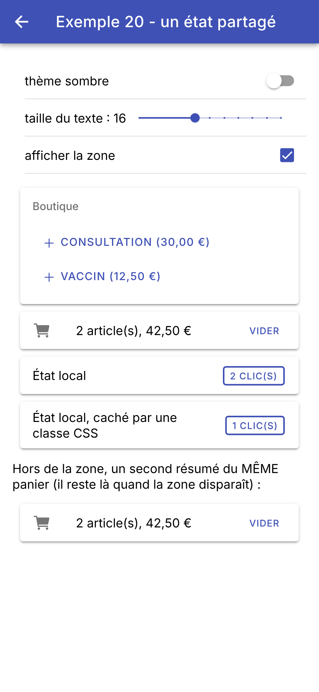
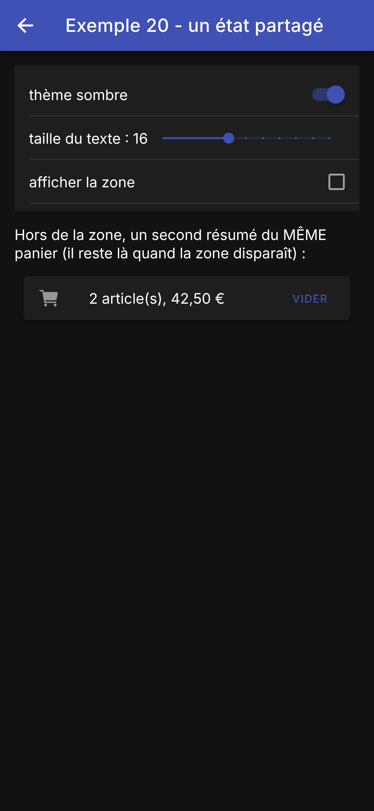
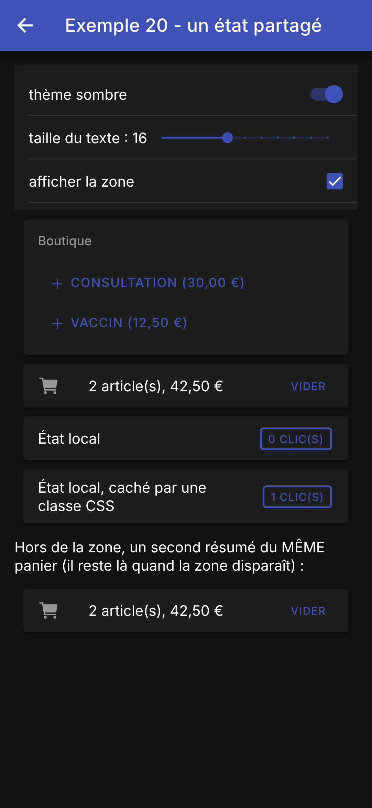

6. L'asynchrone et l'état partagé
6.1. Exemple 19 : promesses, observables et minuteries
Beaucoup de choses arrivent « plus tard » : les tics d'une minuterie, les frappes au clavier, la réponse d'un serveur. Une application [Ionic] dispose de deux types pour cela :
- [Promise<T>], celui de [JavaScript] : UNE valeur, plus tard (la réponse d'un serveur, le choix fait dans une fenêtre). Les mots-clés [async] et [await] permettent de l'attendre sans bloquer l'application. C'est le [Future] de [Dart] ;
- [Observable<T>], celui de la bibliothèque [RxJS], livrée avec [Angular] : une SUITE de valeurs, au fil du temps (des tics, des frappes, des messages...), qu'on transforme par des opérateurs ([map], [take], [debounceTime], [switchMap]...). C'est le [Stream] de [Dart]. [JavaScript] a aussi ses suites asynchrones : les générateurs asynchrones ([async function*]), le pendant des fonctions [async*] de [Dart].
Pour les afficher, [Angular] offre trois outils, les pendants de [FutureBuilder] et de [StreamBuilder] : le pipe [async] (un [Observable] lu dans le gabarit), [toSignal()] (un [Observable] transformé en signal) et [resource()] (une [Promise] transformée en signaux). Et pour ce qui doit arriver après un délai : [setTimeout], ou les minuteries de [RxJS] ([timer], [interval]).
6.1.1. La page
| // =========================================================================
// src/app/ex19-asynchrone/ex19.page.ts - promesses, observables, minuteries
// -------------------------------------------------------------------------
// Beaucoup de choses arrivent "plus tard" : les tics d'une minuterie, les
// frappes au clavier, la réponse d'un serveur. On dispose de deux types :
// - Promise (JavaScript) : UNE valeur, plus tard (la réponse d'un
// serveur) ; async / await pour l'attendre ;
// - Observable (bibliothèque RxJS, livrée avec Angular) : une SUITE de
// valeurs, au fil du temps (des tics, des frappes...), qu'on transforme
// par des "opérateurs" (map, take, debounceTime, switchMap...).
// Pour les afficher, Angular offre le pipe async (un Observable dans le
// gabarit), toSignal() (un Observable devenu signal) et resource() (une
// Promise devenue signal).
// =========================================================================
import { AsyncPipe } from '@angular/common';
import { Component, resource, signal } from '@angular/core';
import { takeUntilDestroyed, toSignal } from '@angular/core/rxjs-interop';
import {
IonBackButton, IonButtons, IonCard, IonCardContent, IonCardHeader, IonCardSubtitle, IonContent, IonHeader, IonInput,
IonNote, IonTitle, IonToolbar,
} from '@ionic/angular';
import { debounceTime, finalize, from, map, Observable, of, Subject, switchMap, take, tap, timer } from 'rxjs';
const medecins = ['Marie PELISSIER', 'Paul TATOU', 'Sophie DUPONT', 'Jacques DURAND', 'Martine PELLETIER'];
// une minuterie sous forme de Promise : elle se termine au bout de ms millisecondes
function attendre(ms: number): Promise<void> {
return new Promise((resolve) => setTimeout(resolve, ms));
}
// un "serveur" simulé : la réponse (une Promise) arrive après un délai aléatoire
async function rechercher(texte: string): Promise<string[]> {
await attendre(200 + Math.floor(Math.random() * 600));
return medecins.filter((m) => m.toLowerCase().includes(texte));
}
// 1a. un GÉNÉRATEUR ASYNCHRONE (async function*, avec une étoile) : chaque
// yield ENVOIE une valeur à celui qui le parcourt (for await...of)
async function* compteARebours(depart: number): AsyncGenerator<number> {
for (let reste = depart; reste >= 0; reste--) {
yield reste;
if (reste > 0) await attendre(1000);
}
}
// "15:30:45"
const heureCourante = () => new Date().toTimeString().substring(0, 8);
@Component({
selector: 'app-ex19',
imports: [
AsyncPipe, IonHeader, IonToolbar, IonButtons, IonBackButton, IonTitle, IonContent, IonCard, IonCardHeader,
IonCardSubtitle, IonCardContent, IonInput, IonNote,
],
templateUrl: './ex19.page.html',
styles: `
.nombre { font-size: 2em; color: var(--ion-text-color); }
.journal { font-size: 12px; }
`,
})
export class Ex19Page {
readonly journal = signal<string[]>([]);
// 1a. le générateur, transformé en Observable par from() ; le gabarit
// l'affiche avec le pipe async. Créé UNE fois, dans un champ
readonly rebours$: Observable<number> = from(compteARebours(20));
// 1b. le même compte à rebours, avec les opérateurs de RxJS : timer(0, 1000)
// émet 0, 1, 2... toutes les secondes ; take(21) s'arrête après 21 valeurs ;
// map les transforme (0 -> 20, 1 -> 19...). toSignal : un signal qui vaut
// la dernière valeur reçue (undefined avant la première)
readonly rebours = toSignal(timer(0, 1000).pipe(take(21), map((i) => 20 - i)));
// 3. une Promise qui se termine au bout d'une seconde, suivie par resource() :
// un objet à signaux (isLoading(), hasValue(), value(), error()...)
readonly message = resource({
loader: async () => {
await attendre(1000);
return 'trois (une seconde plus tard)';
},
});
// 2. la recherche au fil de la frappe : un Subject est un Observable dans
// lequel on POUSSE soi-même les valeurs (next) : ici, chaque frappe
private readonly frappes = new Subject<string>();
readonly resultats = signal<string[]>([]);
constructor() {
this.frappes
.pipe(
// l'ANTI-REBOND : une valeur n'est transmise qu'après 400 ms sans
// nouvelle frappe ; les frappes plus rapprochées sont oubliées
debounceTime(400),
map((texte) => texte.trim().toLowerCase()),
// switchMap : chaque texte lance une recherche (un Observable) ; une
// NOUVELLE recherche ABANDONNE la précédente, dont la réponse ne sera
// jamais transmise : pas de réponse "périmée"
switchMap((texte) => this.lancer(texte)),
// l'abonnement prend fin quand la page est détruite
takeUntilDestroyed(),
)
.subscribe((trouves) => this.resultats.set(trouves));
}
private tracer(message: string): void {
this.journal.update((lignes) => [...lignes, `${heureCourante()} ${message}`]);
}
// appelée à chaque frappe
saisie(texte: string | null | undefined): void {
this.frappes.next(texte ?? '');
}
private lancer(texte: string): Observable<string[]> {
// moins de deux lettres : pas de recherche, aucun résultat
if (texte.length < 2) {
return of([]);
}
this.tracer(`recherche envoyée : « ${texte} »`);
let recue = false;
// from(Promise) : un Observable qui émet la valeur de la Promise, puis se termine
return from(rechercher(texte)).pipe(
tap(() => (recue = true)),
// finalize : appelé quand l'Observable se termine OU qu'on s'en désabonne
// (c'est ce que fait switchMap quand une nouvelle recherche arrive)
finalize(() => {
if (!recue) this.tracer(`réponse ignorée (périmée) : « ${texte} »`);
}),
);
}
}
|
| <!-- ======================================================================
ex19.page.html - promesses, observables et minuteries
====================================================================== -->
<ion-header>
<ion-toolbar color="primary">
<ion-buttons slot="start">
<ion-back-button defaultHref="/" />
</ion-buttons>
<ion-title>Exemple 19 - l'asynchrone</ion-title>
</ion-toolbar>
</ion-header>
<ion-content class="ion-padding">
<ion-card>
<ion-card-header>
<ion-card-subtitle>Deux comptes à rebours (des Observable)</ion-card-subtitle>
</ion-card-header>
<ion-card-content>
<!-- le pipe async s'abonne à l'Observable, affiche chaque nouvelle
valeur, et se désabonne quand la page disparaît ; il vaut null
avant la première valeur. @let : une variable du gabarit -->
@let n = rebours$ | async;
<p>async function* et pipe async : <span class="nombre">{{ n ?? '...' }}</span></p>
<!-- le signal : undefined avant la première valeur -->
<p>RxJS et toSignal() : <span class="nombre">{{ rebours() ?? '...' }}</span></p>
</ion-card-content>
</ion-card>
<ion-card>
<ion-card-header>
<ion-card-subtitle>Une recherche au fil de la frappe (anti-rebond, réponses périmées)</ion-card-subtitle>
</ion-card-header>
<ion-card-content>
<!-- (ionInput) : à chaque frappe -->
<ion-input placeholder="au moins deux lettres : pel, dur..." (ionInput)="saisie($event.detail.value)" />
@for (r of resultats(); track r) {
<p>• {{ r }}</p>
} @empty {
<ion-note>aucun résultat</ion-note>
}
</ion-card-content>
</ion-card>
<ion-card>
<ion-card-header>
<ion-card-subtitle>Attendre une Promise (resource)</ion-card-subtitle>
</ion-card-header>
<ion-card-content>
<!-- tant que la Promise n'est pas terminée : le contenu d'attente -->
@if (message.hasValue()) {
<p>reçu : {{ message.value() }}</p>
} @else {
<ion-note>en attente...</ion-note>
}
</ion-card-content>
</ion-card>
<h6>Journal</h6>
@for (ligne of journal(); track $index) {
<div class="journal">{{ $index + 1 }}. {{ ligne }}</div>
}
</ion-content>
|
Les outils :
- lignes 28-30 (.ts) : une minuterie sous forme de [Promise]. [new Promise(...)] reçoit une fonction qui démarre le travail et appellera [resolve] quand il sera fini ; ici, [setTimeout] l'appelle au bout de [ms] millisecondes. [await attendre(1000)] attend donc une seconde, sans bloquer l'application (c'était [Future.delayed] avec [Dart]) ;
- lignes 33-36 (.ts) : un « serveur » simulé : une fonction [async], qui rend une [Promise] ; sa réponse arrive après un délai aléatoire (entre 200 et 800 millisecondes) ;
- lignes 40-45 (.ts) : un générateur asynchrone : une fonction [async function*] (avec une étoile). Chaque [yield] ENVOIE une valeur à celui qui parcourt le générateur ; entre deux valeurs, la fonction attend une seconde. On peut le parcourir avec une boucle [for await (const n of compteARebours(20))].
Le premier compte à rebours :
- ligne 67 (.ts) : le générateur, transformé en [Observable] par [from()], qui accepte un générateur asynchrone, une [Promise], un tableau... Par convention, le nom d'une variable qui contient un [Observable] finit par [$] ;
- ligne 23 (html) : le pipe [async] s'abonne à l'[Observable], affiche chaque nouvelle valeur, et se désabonne tout seul quand la page disparaît ; il vaut [null] avant la première valeur. [@let n = ...] déclare une variable du gabarit, lue ligne 24 ([n ?? '...'] : trois points tant que [n] vaut [null]). Comme avec [Flutter], l'[Observable] est créé UNE fois, dans un champ de la classe : si le gabarit appelait une méthode qui le crée, chaque mise à jour de l'écran relancerait le compte à rebours !
Le second, avec les opérateurs de [RxJS] :
- ligne 73 (.ts) : [timer(0, 1000)] émet 0 tout de suite, puis 1, 2, 3... toutes les secondes ; la méthode [pipe] lui applique des opérateurs, l'un après l'autre : [take(21)] ne garde que les 21 premières valeurs (puis l'[Observable] se termine) ; [map] transforme chaque valeur (0 donne 20, 1 donne 19...). [toSignal] s'abonne à l'[Observable] et en fait un signal, qui vaut la dernière valeur reçue ([undefined] avant la première) ; il se désabonne quand la page est détruite ;
- ligne 26 (html) : le signal se lit comme tous les signaux.
La [Promise] attendue :
- lignes 77-82 (.ts) : [resource()] reçoit une fonction [loader] qui rend une [Promise], la lance, et expose son état sous forme de signaux : [isLoading()], [hasValue()], [value()], [error()]. Si l'on donnait une option [params], une fonction qui lit des signaux, la ressource se rechargerait quand ils changent (le [loader], lui, n'est pas suivi) : on la retrouvera pour interroger un serveur ;
- lignes 51-55 (html) : tant que la [Promise] n'est pas terminée, le contenu d'attente ; ensuite, sa valeur (c'était [FutureBuilder] et [ConnectionState.done]).
La recherche au fil de la frappe :
- ligne 86 (.ts) : un [Subject] est un [Observable] dans lequel on POUSSE soi-même les valeurs ([next]) : ici, chaque frappe (lignes 111-113, appelée par l'événement [(ionInput)] du champ, ligne 36 du html) ;
- ligne 94 (.ts) : l'anti-rebond (« debounce ») : on attend que l'utilisateur fasse une pause avant d'interroger le serveur, au lieu d'envoyer une requête par touche. L'opérateur [debounceTime(400)] ne transmet une valeur qu'après 400 millisecondes sans nouvelle valeur : les frappes plus rapprochées sont oubliées. Avec [Flutter], il fallait annuler et relancer soi-même une minuterie ([Timer]) à chaque frappe ;
- ligne 95 (.ts) : le texte, sans espaces autour, en minuscules ;
- ligne 99 (.ts) : les réponses périmées. Une réponse qui arrive APRÈS qu'on a lancé une autre recherche doit être ignorée : sinon, la réponse lente d'une vieille recherche écraserait celle de la nouvelle. L'opérateur [switchMap] s'en charge : pour chaque texte, il appelle [lancer], qui rend un [Observable] (la recherche) ; quand un nouveau texte arrive, il se DÉSABONNE de la recherche précédente, dont la réponse ne sera jamais transmise, puis lance la nouvelle. Avec [Flutter], il fallait numéroter les recherches et comparer les numéros ;
- ligne 101 (.ts) : [takeUntilDestroyed()] met fin à l'abonnement quand la page est détruite : sans lui, le [Subject] et ses opérateurs continueraient de vivre (c'était le [dispose] de [Flutter]). Il doit être appelé dans un « contexte d'injection » : ici, le constructeur ;
- ligne 103 (.ts) : [subscribe] s'abonne à l'[Observable] : rien ne se passe tant que personne ne s'abonne. Chaque liste de résultats est rangée dans un signal, que le gabarit affiche (lignes 37-41 du html) ;
- lignes 117-119 (.ts) : moins de deux lettres : pas de recherche ; [of([])] est un [Observable] qui émet tout de suite une liste vide ;
- lignes 123-130 (.ts) : la recherche : la [Promise] du serveur, transformée en [Observable] par [from()]. [tap] exécute une action au passage, sans modifier la valeur : on note que la réponse est arrivée. [finalize] est appelé quand l'[Observable] se termine, ou quand on s'en désabonne : si la réponse n'était pas arrivée, c'est que [switchMap] a abandonné cette recherche, et on le note dans le journal.
On tape « p », « pe », « pel » rapidement : une seule recherche part. Puis « du », suivi de « dup » avant la réponse de « du » : la recherche de « du » est abandonnée (sa réponse est ignorée) au moment où part celle de « dup ». À gauche, la page à son ouverture ; à droite, cinq secondes plus tard :
Dans le journal, la ligne « réponse ignorée » précède la ligne « recherche envoyée : « dup » » : [switchMap] se désabonne de l'ancienne recherche avant de lancer la nouvelle.
En [Dart], [Future] et [Stream] sont dans la bibliothèque de base, et [async], [await], [async*], [yield], [await for] dans le langage. En [JavaScript], [Promise], [async], [await] et les générateurs asynchrones sont aussi dans le langage ; mais pour les suites de valeurs, [Angular] s'appuie sur la bibliothèque [RxJS], dont la centaine d'opérateurs règle en une ligne des problèmes comme l'anti-rebond ou les réponses périmées. Le client HTTP d'[Angular] (exemples 22 à 25) rend d'ailleurs des [Observable]. Depuis l'arrivée des signaux, [Angular] réserve [RxJS] aux flux d'événements, et passe par [toSignal] ou [resource] pour les afficher.
6.2. Exemple 20 : un état partagé
Même question que dans les cours précédents : quelles « portées » pour les données d'une application ?
- l'état local d'un composant disparaît avec lui ;
- l'état d'un magasin (« store ») est partagé par tous les composants et survit à leur retrait... mais pas à l'arrêt de l'application ;
- l'état rangé sur l'appareil survit à l'arrêt de l'application.
6.2.1. Le panier
| // =========================================================================
// src/app/ex20-etat-partage/magasins/panier.ts - un ÉTAT PARTAGÉ : un service
// -------------------------------------------------------------------------
// Un "magasin" (store) est un état qui vit HORS des pages et des
// composants, en UN seul exemplaire, partagé par tous ceux qui le lisent.
// Avec Angular, c'est un SERVICE (cf. exemple 14) dont l'état est fait de
// SIGNAUX. Organisation habituelle :
// - l'ÉTAT : des signaux PRIVÉS (_articles) ;
// - leur lecture : des vues en lecture seule (asReadonly) ;
// - les ACTIONS : des méthodes, seules à modifier l'état ;
// - les valeurs calculées : des signaux computed.
// Un composant l'obtient par inject(Panier) ; son gabarit, qui lit les
// signaux, est mis à jour quand ILS changent, et seulement eux.
// providedIn: 'root' : le service est créé à sa première demande et vit
// tant que l'application vit : il survit au retrait d'un composant... mais
// pas à l'arrêt de l'application.
// =========================================================================
import { computed, Injectable, signal } from '@angular/core';
export interface Article {
libelle: string;
prix: number;
}
@Injectable({ providedIn: 'root' })
export class Panier {
private readonly _articles = signal<Article[]>([]);
// une vue NON MODIFIABLE de l'état : seules les actions le changent
readonly articles = this._articles.asReadonly();
readonly nombre = computed(() => this._articles().length);
readonly total = computed(() => this._articles().reduce((s, a) => s + a.prix, 0));
ajouter(article: Article): void {
// un NOUVEAU tableau : le signal voit que sa valeur a changé
this._articles.update((articles) => [...articles, article]);
}
vider(): void {
this._articles.set([]);
}
}
|
Un magasin est un état qui vit HORS des pages et des composants, en UN seul exemplaire, partagé par tous ceux qui le lisent. Avec [Angular], c'est simplement un service (cf. exemple 14) dont l'état est fait de signaux : il n'y a pas de bibliothèque à ajouter, là où [Flutter] utilisait le paquet [provider] autour d'un [ChangeNotifier].
- ligne 26 : [providedIn: 'root'] : le service est créé à sa première demande ([inject(Panier)]), en un seul exemplaire, et vit tant que l'application vit ;
- ligne 28 : l'état : un signal privé ;
- ligne 30 : une vue en lecture seule de l'état ([asReadonly()]) : seules les actions le changent ;
- lignes 31-32 : des valeurs calculées : des signaux [computed], recalculés seulement quand la liste des articles change ;
- lignes 34-41 : les actions : des méthodes, seules à modifier l'état. Ligne 36 : un NOUVEAU tableau ([...articles] recopie les articles), et non [push] dans l'ancien : un signal compare l'ancienne et la nouvelle valeur ([===]), et ne prévient ses lecteurs que si elles diffèrent. Il n'y a pas de [notifyListeners()] à écrire : c'est le signal qui prévient.
6.2.2. Les préférences
| // =========================================================================
// src/app/ex20-etat-partage/magasins/preferences.ts - un état qui survit à l'arrêt
// -------------------------------------------------------------------------
// Pour qu'une donnée survive à l'arrêt de l'application, il faut la ranger
// SUR L'APPAREIL. Le "plugin" @capacitor/preferences offre un petit
// dictionnaire clé -> valeur (des chaînes), propre à l'application et
// conservé sur l'appareil (Android : les SharedPreferences ; dans un
// navigateur : le localStorage). Toutes ses méthodes sont ASYNCHRONES
// (elles rendent une Promise) :
// - au démarrage, on lit les valeurs mémorisées ;
// - à chaque changement, on les réécrit.
// On n'y range JAMAIS de donnée sensible (mot de passe, jeton) : elles y
// sont écrites en clair.
// =========================================================================
import { effect, Injectable, signal } from '@angular/core';
// "as Stockage" : renommé, pour ne pas le confondre avec notre classe
import { Preferences as Stockage } from '@capacitor/preferences';
const cleSombre = 'exemple20.sombre';
const cleTaille = 'exemple20.taille';
@Injectable({ providedIn: 'root' })
export class Preferences {
// l'état de départ : les valeurs par défaut, en attendant la lecture
private readonly _sombre = signal(false);
private readonly _taille = signal(16); // taille du texte
readonly sombre = this._sombre.asReadonly();
readonly taille = this._taille.asReadonly();
constructor() {
this.charger();
// un EFFET : une fonction rejouée chaque fois qu'un signal qu'elle lit
// change. Elle applique les préférences à TOUTE l'application :
// - la classe ion-palette-dark sur <html> : le thème sombre d'Ionic
// (cf. styles.scss) ;
// - la taille de la police de <html> : les composants d'Ionic ont des
// tailles en rem (multiples de cette taille), ils suivent
effect(() => {
document.documentElement.classList.toggle('ion-palette-dark', this._sombre());
document.documentElement.style.fontSize = `${this._taille()}px`;
});
}
// ce que l'appareil a mémorisé (value vaut null si la clé est absente)
private async charger(): Promise<void> {
const sombre = await Stockage.get({ key: cleSombre });
const taille = await Stockage.get({ key: cleTaille });
if (sombre.value !== null) this._sombre.set(sombre.value === 'true');
if (taille.value !== null) this._taille.set(Number(taille.value));
}
// un paramètre facultatif par préférence : on ne change que ce qui est fourni
modifier({ sombre, taille }: { sombre?: boolean; taille?: number }): void {
if (sombre !== undefined) {
this._sombre.set(sombre);
Stockage.set({ key: cleSombre, value: String(sombre) }); // écriture sur l'appareil
}
if (taille !== undefined) {
this._taille.set(taille);
Stockage.set({ key: cleTaille, value: String(taille) });
}
}
}
|
Pour qu'une donnée survive à l'arrêt de l'application, il faut la ranger sur l'appareil. Le « plugin » [@capacitor/preferences] de [Capacitor] offre un petit dictionnaire clé -> valeur (des chaînes), propre à l'application et conservé sur l'appareil : les [SharedPreferences] d'[Android] (celles qu'utilise le paquet [shared_preferences] de [Flutter]), et, dans un navigateur, le [localStorage]. Toutes ses méthodes sont asynchrones : elles rendent une [Promise].
- ligne 18 : le plugin s'appelle lui aussi [Preferences] ; [as Stockage] le renomme dans ce fichier, pour ne pas le confondre avec notre classe ;
- lignes 26-29 : l'état de départ, des signaux aux valeurs par défaut, et leurs vues en lecture seule ;
- ligne 32 : la lecture de l'appareil est lancée à la création du service. Elle est asynchrone : pendant un court instant, les valeurs par défaut s'appliquent ;
- lignes 39-42 : un effet ([effect]) : une fonction rejouée chaque fois qu'un signal qu'elle lit change. Elle applique les préférences à TOUTE l'application : la classe CSS [ion-palette-dark] sur la balise [<html>] active le thème sombre d'[Ionic] (prévu dans [styles.scss]) ; la taille de la police de [<html>] agrandit les textes, car les composants d'[Ionic] expriment leurs tailles en [rem] (des multiples de cette taille). Un effet sert à cela : répercuter des signaux sur le monde extérieur (le DOM, le stockage...) ; il ne doit pas servir à calculer d'autres signaux ([computed] est fait pour cela) ;
- lignes 46-51 : la lecture de l'appareil : [Stockage.get] rend une [Promise] de [{ value }], où [value] vaut [null] si la clé est absente. Les valeurs sont des chaînes : on les convertit ;
- lignes 54-63 : une seule action, à paramètres facultatifs (un objet déstructuré : [{ sombre, taille }]) : on ne change que ce qui est fourni, et on l'écrit aussitôt sur l'appareil ([Stockage.set]). On n'attend pas la fin de l'écriture : le signal, lui, a déjà changé.
On n'y range JAMAIS de donnée sensible (mot de passe, jeton) : elles y sont écrites en clair. Pour cela, il existe des plugins qui utilisent le coffre-fort du système ([Keystore] d'[Android], [Keychain] d'[iOS]).
6.2.3. Les composants
| // =========================================================================
// src/app/ex20-etat-partage/composants/boutique.ts - AJOUTE au panier partagé
// -------------------------------------------------------------------------
// La boutique ne fait qu'APPELER une action du panier ; son gabarit ne lit
// aucun signal du panier : il n'est pas mis à jour quand le panier change.
// =========================================================================
import { CurrencyPipe } from '@angular/common';
import { Component, inject } from '@angular/core';
import { IonButton, IonCard, IonCardContent, IonCardHeader, IonCardSubtitle, IonIcon } from '@ionic/angular';
import { addIcons } from 'ionicons';
import { add } from 'ionicons/icons';
import { Article, Panier } from '../magasins/panier';
const produits: Article[] = [
{ libelle: 'Consultation', prix: 30 },
{ libelle: 'Vaccin', prix: 12.5 },
];
@Component({
selector: 'app-ex20-boutique',
imports: [CurrencyPipe, IonCard, IonCardHeader, IonCardSubtitle, IonCardContent, IonButton, IonIcon],
templateUrl: './boutique.html',
})
export class Boutique {
readonly produits = produits;
// le MÊME panier que celui des autres composants (un seul exemplaire)
readonly panier = inject(Panier);
constructor() {
addIcons({ add });
}
}
|
| <!-- ======================================================================
boutique.html - deux produits à ajouter au panier
====================================================================== -->
<ion-card>
<ion-card-header>
<ion-card-subtitle>Boutique</ion-card-subtitle>
</ion-card-header>
<ion-card-content>
@for (p of produits; track p.libelle) {
<ion-button fill="clear" (click)="panier.ajouter(p)">
<ion-icon slot="start" name="add" />
{{ p.libelle }} ({{ p.prix | currency: 'EUR' }})
</ion-button>
}
</ion-card-content>
</ion-card>
|
- ligne 28 (.ts) : [inject(Panier)] donne le MÊME panier que celui des autres composants ;
- ligne 11 (html) : la boutique ne fait qu'appeler une action. Son gabarit ne lit aucun signal du panier : il n'est pas mis à jour quand le panier change (c'était [context.read<Panier>()] avec [provider]) ;
- ligne 13 (html) : le pipe [currency] met le prix en forme, à la française (cf. exemple 09).
| // =========================================================================
// src/app/ex20-etat-partage/composants/resume-panier.ts - LIT le même panier
// -------------------------------------------------------------------------
// Le gabarit lit deux signaux du panier, nombre() et total() : il est mis
// à jour quand l'UN d'eux change, et seulement alors.
// =========================================================================
import { CurrencyPipe } from '@angular/common';
import { Component, inject } from '@angular/core';
import { IonButton, IonCard, IonIcon, IonItem, IonLabel } from '@ionic/angular';
import { addIcons } from 'ionicons';
import { cart } from 'ionicons/icons';
import { Panier } from '../magasins/panier';
@Component({
selector: 'app-ex20-resume-panier',
imports: [CurrencyPipe, IonCard, IonItem, IonIcon, IonLabel, IonButton],
templateUrl: './resume-panier.html',
})
export class ResumePanier {
readonly panier = inject(Panier);
constructor() {
addIcons({ cart });
}
}
|
| <!-- ======================================================================
resume-panier.html - le nombre d'articles et le total du panier
====================================================================== -->
<ion-card>
<ion-item lines="none">
<ion-icon slot="start" name="cart" />
<ion-label>{{ panier.nombre() }} article(s), {{ panier.total() | currency: 'EUR' }}</ion-label>
<ion-button slot="end" fill="clear" [disabled]="panier.nombre() === 0" (click)="panier.vider()">
Vider
</ion-button>
</ion-item>
</ion-card>
|
- lignes 8-9 (html) : le gabarit lit deux signaux du panier, [nombre()] et [total()] : il est mis à jour quand l'UN d'eux change, et seulement alors. Avec [provider], il fallait choisir entre [context.watch] (tout le panier) et [context.select] (une valeur) ; avec les signaux, la précision est automatique : on dépend de ce qu'on lit.
| // =========================================================================
// src/app/ex20-etat-partage/composants/compteur-local.ts - un état LOCAL
// -------------------------------------------------------------------------
// Le signal clics appartient au composant : il naît avec lui et disparaît
// avec lui.
// =========================================================================
import { Component, input, signal } from '@angular/core';
import { IonButton, IonCard, IonItem, IonLabel } from '@ionic/angular';
@Component({
selector: 'app-ex20-compteur-local',
imports: [IonCard, IonItem, IonLabel, IonButton],
templateUrl: './compteur-local.html',
})
export class CompteurLocal {
readonly titre = input.required<string>();
readonly clics = signal(0);
}
|
| <!-- ======================================================================
compteur-local.html - un compteur de clics
====================================================================== -->
<ion-card>
<ion-item lines="none">
<ion-label>{{ titre() }}</ion-label>
<ion-button slot="end" fill="outline" (click)="clics.set(clics() + 1)">{{ clics() }} clic(s)</ion-button>
</ion-item>
</ion-card>
|
Un état local (ligne 18 du .ts), qui naît et disparaît avec le composant.
6.2.4. La page
| // =========================================================================
// src/app/ex20-etat-partage/ex20.page.ts - trois "portées" de données
// -------------------------------------------------------------------------
// - l'état LOCAL d'un composant (CompteurLocal) disparaît avec lui ;
// - l'état d'un SERVICE (le panier) est partagé par tous les composants
// et survit à leur retrait - mais pas à l'arrêt de l'application ;
// - l'état rangé sur l'appareil (les préférences) survit à l'arrêt.
// Et la classe CSS ion-hide : le contenu est CACHÉ, mais pas retiré ; son
// état local est conservé.
// Décochez puis recochez "afficher la zone", puis arrêtez et relancez
// l'application : comparez.
// =========================================================================
import { Component, inject, signal } from '@angular/core';
import {
IonBackButton, IonButtons, IonCheckbox, IonContent, IonHeader, IonItem, IonLabel, IonList, IonRange, IonTitle,
IonToggle, IonToolbar,
} from '@ionic/angular';
import { Boutique } from './composants/boutique';
import { CompteurLocal } from './composants/compteur-local';
import { ResumePanier } from './composants/resume-panier';
import { Preferences } from './magasins/preferences';
@Component({
selector: 'app-ex20',
imports: [
IonHeader, IonToolbar, IonButtons, IonBackButton, IonTitle, IonContent, IonList, IonItem, IonLabel, IonToggle,
IonRange, IonCheckbox, Boutique, ResumePanier, CompteurLocal,
],
templateUrl: './ex20.page.html',
})
export class Ex20Page {
readonly preferences = inject(Preferences);
// un état local de la page
readonly zoneVisible = signal(true);
}
|
| <!-- ======================================================================
ex20.page.html - un état partagé
====================================================================== -->
<ion-header>
<ion-toolbar color="primary">
<ion-buttons slot="start">
<ion-back-button defaultHref="/" />
</ion-buttons>
<ion-title>Exemple 20 - un état partagé</ion-title>
</ion-toolbar>
</ion-header>
<ion-content class="ion-padding">
<ion-list>
<ion-item>
<!-- [checked] : la valeur du service ; (ionChange) : l'action qui la modifie -->
<ion-toggle [checked]="preferences.sombre()"
(ionChange)="preferences.modifier({ sombre: $event.detail.checked })">thème sombre</ion-toggle>
</ion-item>
<ion-item>
<!-- snaps / ticks : des crans, tous les step -->
<ion-range [min]="12" [max]="22" [step]="1" [snaps]="true" [ticks]="true" [value]="preferences.taille()"
(ionChange)="preferences.modifier({ taille: +$event.detail.value })">
<ion-label slot="label">taille du texte : {{ preferences.taille() }}</ion-label>
</ion-range>
</ion-item>
<ion-item>
<ion-checkbox [checked]="zoneVisible()" (ionChange)="zoneVisible.set($event.detail.checked)">
afficher la zone</ion-checkbox>
</ion-item>
</ion-list>
<!-- retirée : ces composants disparaissent, avec leur état local -->
@if (zoneVisible()) {
<app-ex20-boutique />
<app-ex20-resume-panier />
<app-ex20-compteur-local titre="État local" />
}
<!-- cachée (ion-hide : display none) : le composant reste en mémoire, son état est conservé -->
<app-ex20-compteur-local titre="État local, caché par une classe CSS" [class.ion-hide]="!zoneVisible()" />
<p>Hors de la zone, un second résumé du MÊME panier (il reste là quand la zone disparaît) :</p>
<app-ex20-resume-panier />
</ion-content>
|
- ligne 33 (.ts) : les préférences, un service ; il est créé (et lit l'appareil) à sa première demande ;
- ligne 35 (.ts) : un état local de la page : la zone est-elle affichée ?
- lignes 18-19 (html) : un interrupteur ([<ion-toggle>]) : [[checked]] reçoit la valeur du service, et [(ionChange)] appelle son action ;
- lignes 23-26 (html) : un curseur ([<ion-range>]) de 12 à 22, à crans ([snaps], [ticks]) ; [+$event.detail.value] convertit la valeur en nombre ;
- lignes 29-30 (html) : une case à cocher, liée à l'état local ;
- lignes 35-39 (html) : retirée ([@if]), la zone disparaît : ses composants sont DÉTRUITS, avec leur état local ;
- ligne 41 (html) : cachée, par la classe CSS [ion-hide] d'[Ionic] ([display: none]), le composant reste en mémoire : son état est conservé. [[class.ion-hide]="..."] pose la classe quand l'expression est vraie. (C'était le [Visibility(maintainState: true)] de [Flutter].)
- ligne 44 (html) : un second résumé du même panier, hors de la zone.
Le panier et les préférences sont fournis à toute l'application ([providedIn: 'root']). Pour qu'un service soit propre à une page (un exemplaire par page, détruit avec elle), on le déclare dans les [providers] de son composant, comme le fera l'exemple 21.
6.2.5. L'exécution
On ajoute deux articles, on appuie deux fois sur le premier compteur local et une fois sur le second (à gauche) ; on retire la zone et on passe au thème sombre (au milieu) ; on remet la zone (à droite) :
 |  |  |
Le panier a survécu au retrait de la zone (le second résumé le montre) ; le compteur retiré est reparti de zéro ; le compteur caché a gardé sa valeur. Arrêtez l'application et relancez-la (dans le navigateur : rechargez la page) : le thème sombre et la taille du texte sont conservés, le panier est vide. Les préférences s'appliquent à toute l'application : en revenant au menu, il est lui aussi en thème sombre.
Pourquoi pas une bibliothèque de gestion d'état ? Il en existe pour [Angular] ([NgRx], sa variante [SignalStore], [NGXS]...), comme il en existe pour [Flutter] ([provider], [Riverpod], [Bloc]...). Mais l'injection de dépendances et les signaux font déjà l'essentiel : un service à signaux est un magasin, et c'est ce qu'utilisera l'étude de cas.